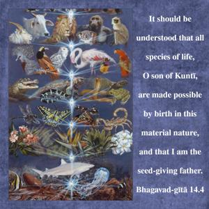
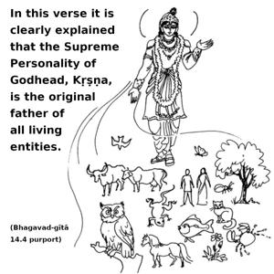
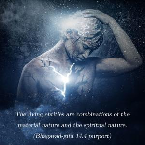
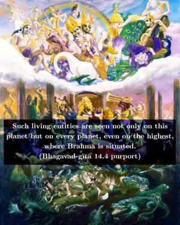
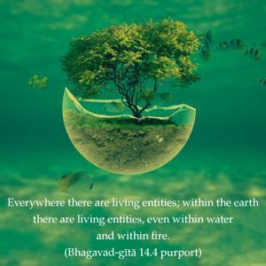
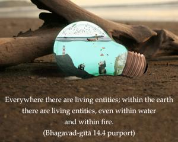
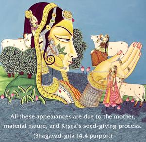

It should be understood that all species of life, O son of Kuntī, are made possible by birth in this material nature, and that I am the seed-giving father.







In this verse it is clearly explained that the Supreme Personality of Godhead, Kṛṣṇa, is the original father of all living entities. The living entities are combinations of the material nature and the spiritual nature. Such living entities are seen not only on this planet but on every planet, even on the highest, where Brahmā is situated. Everywhere there are living entities; within the earth there are living entities, even within water and within fire. All these appearances are due to the mother, material nature, and Kṛṣṇa’s seed-giving process. The purport is that the material world is impregnated with living entities, who come out in various forms at the time of creation according to their past deeds.